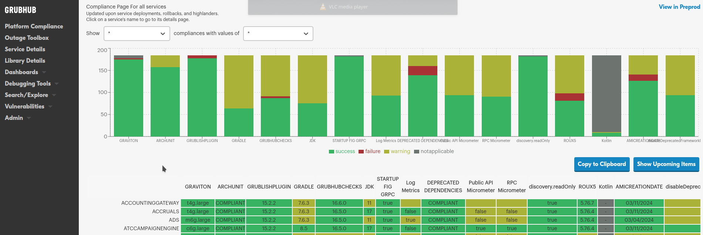
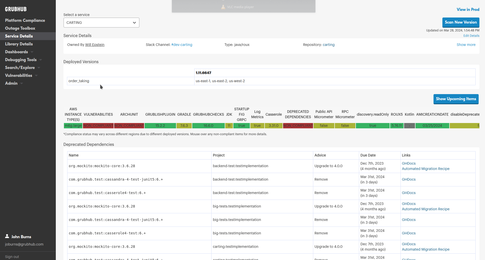
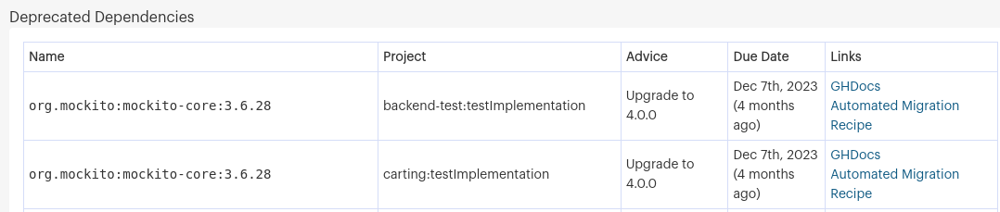
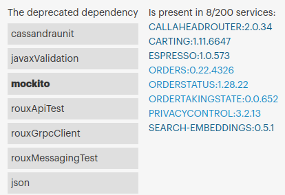
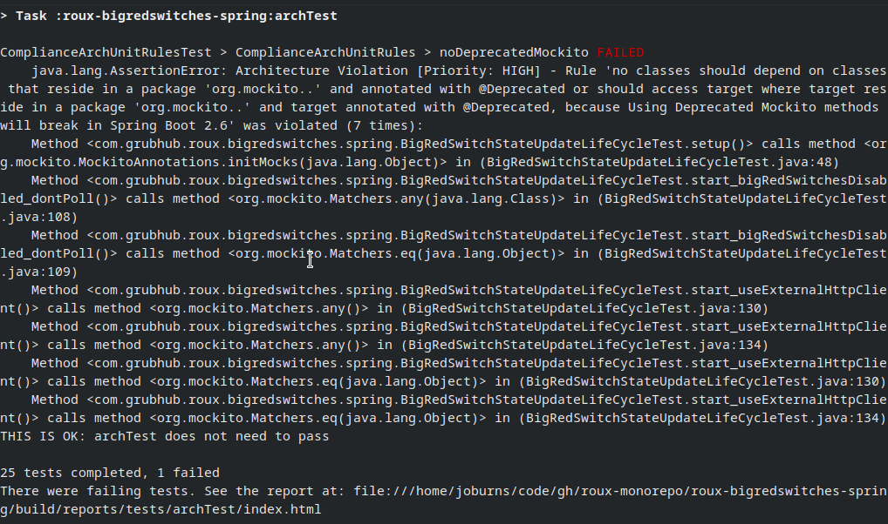
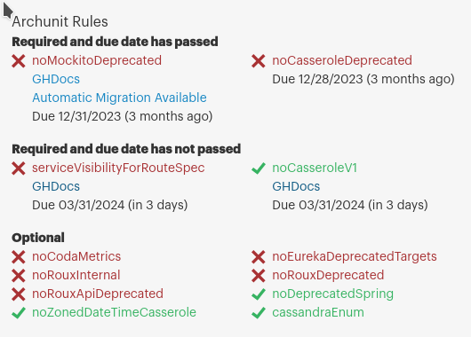
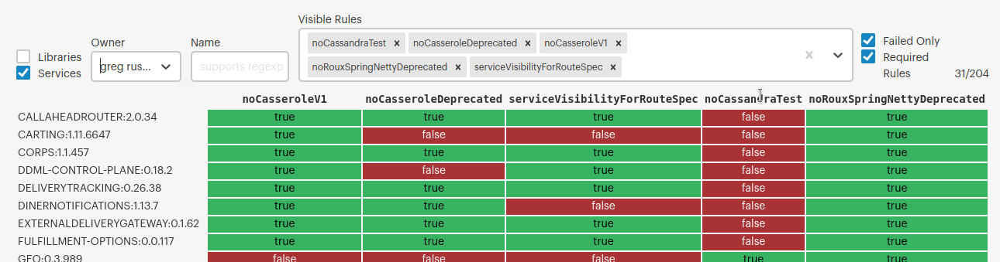

Delivering a Great Developer Experience
with Platform Engineering
About Us
John Burns
Sr. Staff Platform Engineer @ GrubHub
CKUG Co-Organizer
ktlint-gradle Maintainer
 wakingrufus
wakingrufus
 @wakingrufus@bigshoulders.city
@wakingrufus@bigshoulders.city
About Us
Sam Raghunath
Ex-Sr. Principal Platform Engineer @ GrubHub
onewaysidewalks

- Unlimited PTO
- 8-16 weeks of parental leave
- 4.5 day work week
- Practice Platform Engineering
Agenda
- History: DevOps -> Platform Engineering
- What is Platform Engineering?
- What makes up a platform?
- How does Platform Engineering effect Developer Experience?
- Case Study @ Grubhub
Where we started: DevOps
What about Platform Engineering?
- Centralize Devops Expertise
- Expand Scope past operations into streamlined runtime solutions
What does platform engineering encompass?
Platform Engineering
Infrastructure
- CI/CD tooling
- IaaS
- Networking
- Service Mesh
- Observability
Service
- Build Tooling
- Platform Services
- Runtime libraries
- "DevSecOps"
Data
- ETL
- Data Lake
- ML Model Training
- Operational Data stores
Platform Elements of DX
CI/CD
- Build / Test / Integrate Code
- View deployment state
- Trigger pipelines
- GrubHub: Jenkins + Spinnaker + Busboy
- Evolving toward k8s
Platform Elements of DX
Local Development Environment
Platform Elements of DX
Build Tooling
- Gradle Plugins
- Generating deployable unit is table stakes
- Most direct line of communication to the developer
- Collect information for reporting back to the IDP
Platform Elements of DX
Runtime Libraries / Frameworks
- Out of the box platform integration
- Clients for platform services
- Reduce boilerplate
- Standardize features
- Roux
- Based on Spring Boot
Platform Elements of DX
Documentation Platform
- Onboarding
- Discovery
- Reference
- Javadocs
Developer Experience
If We...
- Build for team autonomy
- Clear potential blockers
- Reduce learning curve
Then we will see...
- Better Retention
- Higher Productivity
Guiding Principles
Golden path
- Not "golden cage" or "walled garden"
- Allows innovation
- Reduces frustration
- When should team "off-road"?
- When should path be "widened"?
Guiding Principles
Carrot vs Stick
- Build a great product
- Teams will adopt it voluntarily
- Force adoption only as a last resort
Guiding Principles
Communication / Feedback Loops
- Enable informed decisions
- Enable informed planning
Technical Philosophy
Technical Philosophy
Don't break the build
- Don't disrupt productivity
- Anticipate breaking changes
- Help teams migrate
- Track and report progress
Technical Philosophy
Monorepo vs Polyrepo
Technical Philosophy
Cost of Monorepo
- Requires dedicated build team
- Large git repos have scaling limitations
- Reduces Autonomy
- Increases Coupling
Technical Philosophy
Principles of Polyrepo
- Keep related work together (iaas definitions, docs, etc)
- Deliver shared tooling by plugging into CI and build systems
IDP
Internal Developer Portal
- IDP: "Platform" vs "Portal"
- Deployment state
- Adoption
- Service Scorecard
IDP
Service Scorecard
- Security
- Modernization
- Cost
- Complexity
IDP
Service Scorecard

IDP
Service Scorecard

Case Study: Spring Boot 2.5 Upgrade
Case Study: Spring Boot 2.5 Upgrade
Deprecated Dependency

Case Study: Spring Boot 2.5 Upgrade
Deprecated Dependency

Case Study: Spring Boot 2.5 Upgrade
ArchUnit

Case Study: Spring Boot 2.5 Upgrade
ArchUnit

Case Study: Spring Boot 2.5 Upgrade
ArchUnit

Case Study: Spring Boot 2.5 Upgrade
OpenRewrite
Evolution without disruption
- @Deprecated in Roux: 600 -> 200
- DORA Metrics <- SAM
wakingrufus
@wakingrufus@bigshoulders.city